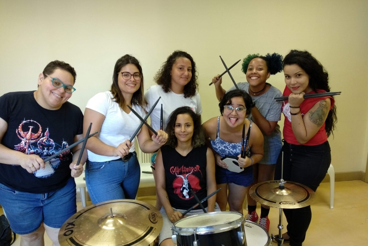
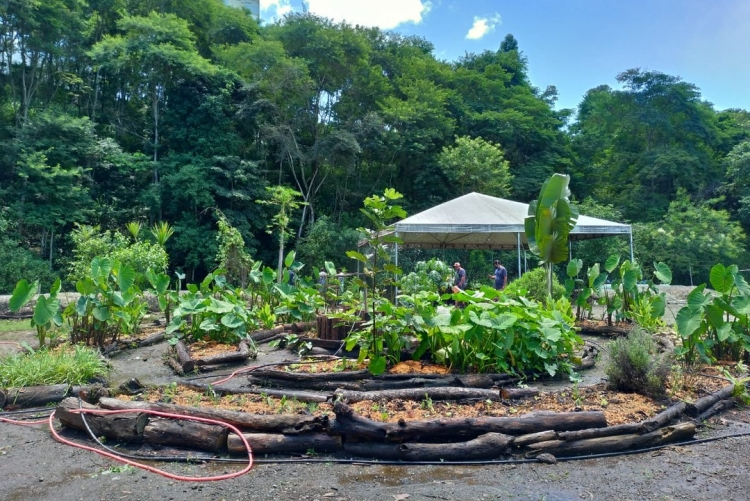

Mulheres no rock: entenda os enfrentamentos femininos na indústria musical
Estudo da UFF analisa as dificuldades e enfrentamentos que mulheres sofrem ao buscar espaço na música
Artigo aqui

Centro de educação ambiental reaproveita resíduos orgânicos de merenda para converter em adubo
No Brasil, os bancos de leite utilizam apenas um questionário padronizado pela Rede Brasileira de Bancos de Leite Humano, para triagem, seleção e acompanhamento de doadoras. Nele, a autodeclaração do consumo de álcool e drogas é o único meio através do qual essa informação pode ser verificada...
Artigo aquiDetecção de cocaína nos bancos de leite: pesquisa desenvolve método para identificar contaminação
De acordo com a Organização Internacional do Trabalho (OIT), mais de 40 milhões de pessoas em todo o mundo foram vítimas da “escravidão moderna”..
Artigo aqui